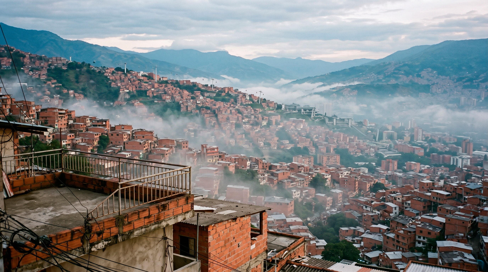

Empujas la puerta de chapa y el aire frío de la madrugada te golpea el rostro. Afuera, el inmenso valle de Medellín apenas comienza a desperezarse. El silencio aquí arriba tiene una textura distinta, interrumpido solo por algún perro a lo lejos y el viento frío que baja de la montaña.

La bruma matinal aún se enreda entre los techos de ladrillo rojo de las comunas. Desde esta altura, la ciudad parece un gigante que respira lento. Sabes que allá abajo, en el denso laberinto peatonal de Carabobo, tendrás que hacer que tu voz resalte entre miles. La inmensidad del paisaje te hace sentir pequeña, pero al mismo tiempo te da una perspectiva: todas esas luces apagándose son personas que, como tú, están por salir a buscarse la vida.
Respiras profundo, llenando tus pulmones del aire frío. Antes de iniciar el descenso, decides cerrar los ojos y escuchar el silencio del barrio, o prefieres volver a entrar un momento para abrir tu baúl de los recuerdos en busca de inspiración.